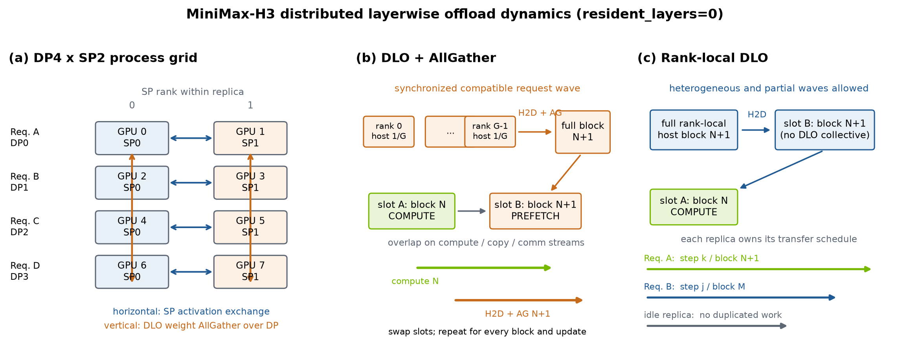
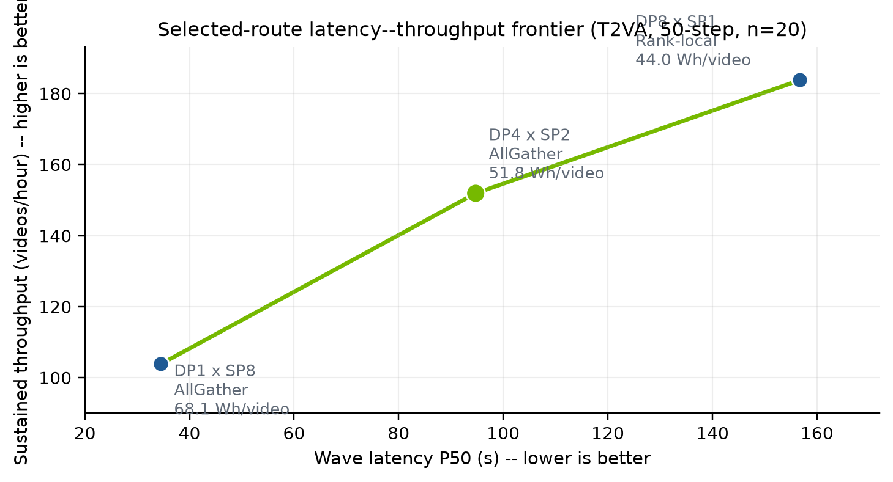
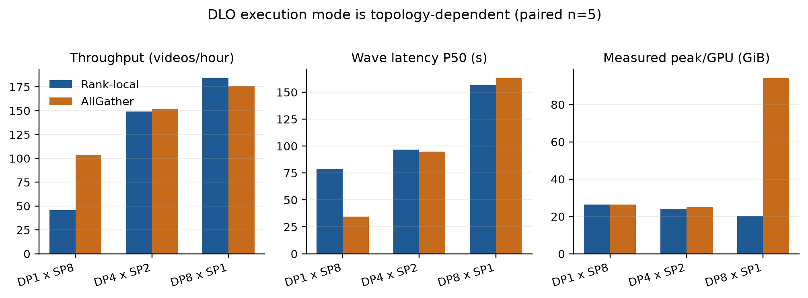
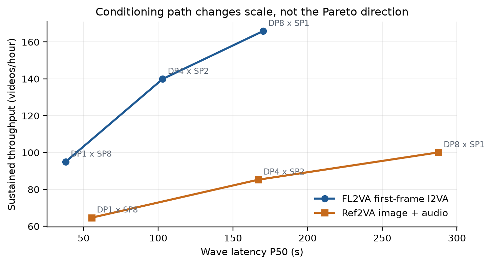

Empirical Systems Research Note · vLLM-Omni
Topology-Aware Distributed Layerwise Offloading for MiniMax-H3 on Eight NVIDIA B300 GPUs
vLLM-Omni Systems Benchmark
9 August 2026
Keywords: diffusion inference; video generation; distributed layerwise offload; data parallelism; sequence parallelism; B300; vLLM-Omni
1. Introduction
Diffusion-transformer serving on a fixed multi-GPU node admits two competing uses of parallel capacity. SP reduces the latency of one request by partitioning sequence work, while DP serves independent requests concurrently. DLO adds a third choice: weights may advance in collective waves or be maintained independently by each DP replica.
This study asks three questions: RQ1, which evaluated DP×SP configurations lie on the latency–throughput frontier; RQ2, where AllGather outperforms rank-local DLO; and RQ3, whether the frontier persists under image- and audio-conditioned generation. vLLM-Omni extends vLLM to diffusion and heterogeneous multimodal outputs [1]. Recent changes hardened collective DP waves [3] and enabled independent rank-local DP requests [4].
Contributions. We provide a full-step, two-lifecycle selected-route T2VA frontier with latency, throughput, energy, and memory; a paired AllGather/rank-local comparison; and FL2VA/Ref2VA transfer measurements with preserved wave-level data.
2. System and Method
2.1 Hardware, software, and workload
Experiments use one x86_64 host with eight NVIDIA B300 SXM6 AC GPUs, an NV18 full-mesh interconnect, and one NUMA domain. Each GPU reports 275,040 MiB of memory and a 1,100 W board limit. The model is MiniMax-H3 FL2VA or Ref2VA in BF16 with CUDNN_ATTN, enforce_eager=True, and dlo_resident_layers=0. Outputs contain 124 frames at 768×1344 and stereo audio with shape [1,2,165600]. A request specifies 50 inference steps; the tested scheduler executes 49 denoising updates.
The source is commit 9e73ee1 plus a recorded local subgroup-broadcast repair. PyTorch is 2.11.0+cu130. The runtime warned that vLLM-Omni 0.26.0rc2.dev11 was paired with vLLM 0.24.0; all reported workloads passed, but this is not evidence that arbitrary mismatched versions are supported.
The execution path follows the upstream distributed layerwise-offload design [5].

resident_layers=0, block N computes as block N+1 is prefetched into the alternate buffer. Rank-local DLO removes the additional weight collective and allows independent replica progress.2.2 Experimental design
The long-run protocol covers DP1×SP8, DP4×SP2, and DP8×SP1. DP2×SP4 was omitted when the requested long-run protocol was narrowed to three recommended routes; it was not measured and is not claimed to be dominated. All frontier statements are therefore conditional on the evaluated set.
Each selected T2VA route runs one complete 50-step warmup and measured 50-step waves. Five waves are collected in the first engine lifecycle and fifteen in a second, yielding n=20 while avoiding a result tied to one initialization. DP1, DP4, and DP8 produce one, four, and eight videos per wave. FL2VA first-frame I2VA and Ref2VA image+audio use n=5 measured waves per route after a complete warmup.
External nvidia-smi telemetry targets a 0.5 s interval; the realized median and P95 intervals are 0.758 s and 1.134 s. Power is summed over eight GPUs. Gaps above 2 s are not interpolated. Coverage for the three T2VA soak cases is 99.89–100%.
2.3 Metrics and uncertainty
Board energy is integrated by the trapezoidal rule without subtracting an idle baseline. We report empirical P50/P95 and coefficient of variation. The 95% t-intervals over 20 waves are descriptive because samples are clustered within only two engine lifecycles; they are not production-SLA confidence bounds.
3. Results
3.1 RQ1: Selected-route T2VA Pareto frontier
| Route | P50 (s) | P95 (s) | Videos/h | CV | Peak/GPU | Wh/video |
|---|---|---|---|---|---|---|
| DP1×SP8 / AllGather | 34.55 | 35.25 | 103.84 | 1.38% | 26.37 GiB | 68.08 |
| DP4×SP2 / AllGather | 94.73 | 95.31 | 151.89 | 0.35% | 25.11 GiB | 51.76 |
| DP8×SP1 / rank-local | 156.74 | 157.03 | 183.78 | 0.15% | 20.05 GiB | 43.97 |
Table 1. Recommended T2VA routes. Twenty measured 50-step waves per row.
The three measured routes form a latency–throughput Pareto frontier within the evaluated set. DP2×SP4 remains an unmeasured candidate and could alter the hull or the location of the knee. DP4 increases throughput by 46.3% over DP1, while DP8 adds a further 21.0% over DP4. The descriptive mean-latency 95% t-intervals are [34.440, 34.899] s, [94.646, 94.960] s, and [156.594, 156.824] s.

3.2 RQ2: DLO mode is topology-dependent
| Topology / mode | P50 (s) | P95 (s) | Videos/h | Peak/GPU | Wh/video |
|---|---|---|---|---|---|
| DP1×SP8 / rank-local | 78.92 | 78.98 | 45.62 | 26.26 | 94.06 |
| DP1×SP8 / AllGather | 34.24 | 34.78 | 104.64 | 23.53 | 67.75 |
| DP4×SP2 / rank-local | 96.53 | 96.78 | 149.23 | 23.91 | 51.87 |
| DP4×SP2 / AllGather | 94.38 | 94.69 | 152.53 | 24.97 | 51.67 |
| DP8×SP1 / rank-local | 156.92 | 157.17 | 183.55 | 20.03 | 43.97 |
| DP8×SP1 / AllGather | 162.84 | 165.51 | 176.05 | 94.03 | 45.08 |
Table 2. Paired DLO-mode comparison, five measured 50-step T2VA waves per row.

3.3 RQ3: Transfer to conditioned generation
| Workload / route | P50/P95 (s) | Videos/h | Lifecycle/measured peak | Wh/video |
|---|---|---|---|---|
| FL2VA · DP1×SP8 / AG | 37.92/38.32 | 94.97 | 34.67/23.59 GiB | 73.87 |
| FL2VA · DP4×SP2 / AG | 102.90/103.13 | 139.91 | 25.16/25.16 GiB | 55.98 |
| FL2VA · DP8×SP1 / RL | 170.22/178.90 | 165.93 | 93.84/31.14 GiB | 46.88 |
| Ref2VA · DP1×SP8 / AG | 55.44/56.29 | 64.65 | 102.18/97.21 GiB | 103.67 |
| Ref2VA · DP4×SP2 / AG | 167.01/174.78 | 85.26 | 98.29/98.29 GiB | 85.52 |
| Ref2VA · DP8×SP1 / RL | 287.62/289.60 | 100.07 | 21.00/19.36 GiB | 74.06 |
Table 3. Multimodal frontier results, five measured 50-step waves per row.
Conditioning changes absolute scale but preserves the direction of the frontier: SP buys latency, while DP buys throughput and energy efficiency. Memory cannot be extrapolated from T2VA. Ref2VA AllGather approaches 100 GiB/GPU, whereas DP8 rank-local remains near 20 GiB measured peak.

4. Correctness and Reliability Audit
The first DP4×SP2 Ref2VA warmup failed because subgroup collectives used global src=0 even when a DiT subgroup did not contain global rank 0. The preserved failure contains 702 error lines and a group-rank error, with no OOM. Eight MiniMax-H3 subgroup broadcast sites were changed locally to map subgroup-local rank zero to its global rank:
src = dist.get_global_rank(group, 0)The repair covers tensor shape/output, standalone audio length/tensor, reference-video object/shape, video audio lengths, and has_audio. A DP4×SP2 two-step Ref2VA image+audio smoke passed before the full five-wave 50-step rerun. The failure, smoke, and full rerun remain separate artifacts. This local diff is not claimed to be part of PR #5911.
Across 15 successful formal cases and three additional 15-wave soak lifecycles, every output passed shape checks. No OOM, worker death, segfault, attention operation-creation failure, or group-rank error occurred after the repair. Seven cases logged a post-output 30 s orchestrator-stop timeout. These were teardown delays rather than inference failures; the final external check found all GPUs at zero memory and utilization.
5. Threats to Validity
- DP2×SP4 was not measured. The reported Pareto frontier covers three selected candidates rather than all four natural eight-GPU DP×SP factorizations.
- The study otherwise uses one B300 node, one prompt/input set, BF16, batch size one per replica, and a fixed 768×1344/124-frame output. Results do not automatically generalize to PCIe systems, other resolutions, or queue mixes.
- Twenty T2VA waves span only two engine lifecycles; samples within a lifecycle can be autocorrelated. P50/P95 and t-intervals are descriptive.
- Board energy includes idle power and excludes CPU, DRAM, storage, and facility overhead. It supports route comparison, not total-cost accounting.
- Shape validation establishes the output contract, not perceptual quality. VBench, CLIP-style metrics, and blinded human evaluation are absent.
- The local subgroup repair and software-version mismatch must be resolved in a supported build before production qualification.
6. Discussion and Deployment Policy
Use DP1×SP8 with AllGather for latency-sensitive, low-queue-depth traffic. Use DP4×SP2 with AllGather as the balanced default. Use DP8×SP1 rank-local when the queue can continuously fill eight replicas and throughput or energy dominates latency. Do not globally enable AllGather without topology-specific validation; the measured DP8 case is both slower and more memory-intensive.
7. Artifact Availability
The report directory includes the LaTeX source, deterministic figure generator, 15-case summary, two-lifecycle T2VA summary, 105 wave-level measurements, environment and hash manifest, and both benchmark runners (T2VA, multimodal).
Core command shape:
source /home/zjy/code/lsy/vllm-omni/.venv/bin/activate
PYTHONPATH=/path/to/vllm-omni \
DLO_USE_ALLGATHER=1 \
CUDA_VISIBLE_DEVICES=0,1,2,3,4,5,6,7 \
VLLM_WORKER_MULTIPROC_METHOD=spawn \
python run_dp_sp_point.py \
--model /path/to/MiniMax-H3/FL2VA \
--dp 4 --sp 2 --num-gpus 8 \
--steps 50 --warmup-steps 50 --repeats 15 \
--output summary.jsonReferences
- P. Yin et al., “vLLM-Omni: Fully Disaggregated Serving for Any-to-Any Multimodal Models,” arXiv:2602.02204, 2026. Project repository.
- MiniMaxAI, “MiniMax-H3 model card,” 2026. Hugging Face.
- S. Li, “Fix DLO DP concurrent request execution,” vLLM-Omni pull request #5864, 2026.
- S. Li, “Enable independent requests for rank-local DLO DP,” vLLM-Omni pull request #5911, 2026.
- vLLM-Omni contributors, “Distributed Layerwise Offload,” design note, 2026. Source.
- NVIDIA, “NVIDIA Blackwell Ultra AI Factory Platform,” 2026. Product overview.